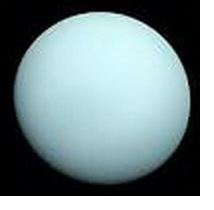

|
Уран в гороскопе
Уран показывает, как проявляется стремление к свободе и индивидуальности, как строится интуитивная связь с универсальным сознанием, которое дает творческие идеи и импульсы, помогающие понимать жизнь с ее проблемами. Показывает побудительные причины желаний, надежд и целей, особенно социальных, указывает, каких друзей человек будет выбирать и к каким группам примкнет.
Уран - символ оригинальности, незаурядности, экстравагантности, эксцентричности, внезапности, неожиданности, сиюминутных, не предвиденных заранее поступков и действий, а также различных перемен, изменений, переломов, перестановок как позитивного, так и негативного толка. Уран помогают человеку приблизиться к пониманию истины. Именно под влиянием Урана рушатся старые представления о мире и взамен им приходят новые, происходит переосмысление духовных и моральных ценностей.
Характеристика Урана в Козероге представлена ниже:
Уран в Козероге
У людей с Ураном в Козероге часто появляется неожиданная цель в жизненной борьбе. Они находят новые способы достижения вершин. Нередко включают техники в повседневность. У них ярко выражено желание изменить существующее положение вещей ради обеспечения будущего. Новое осторожно приспосабливают к старому. Несмотря на стремление к конструктивным переменам, им трудно окончательно расстаться с прошлым. У них сильное честолюбие, стремление к успеху. Они генерируют множество оригинальных идеи в науке и делах, обычно все эти усилия направлены на достижение карьеры и положения. Им успешно удается находить новые области применения старых идей. Их слишком большие профессиональные амбиции и чрезмерное честолюбие могут стать источником проблем в отношениях с руководством. Благодаря своим замечательным идеям они притягивают людей как вдохновенный руководитель. Они хорошо разбираются в людях. Способны продолжать старые традиции, но видят они их в каком-то новом, совершенно другом свете. Они способны ко всему применить научный подход. Стоит отметить, что у этих людей существует постоянный конфликт между Козерогом, который любит традиции и твердо придерживается их, и Ураном — планетой перемен. Если у этих людей не получается примирить эти противоположности, могут оказаться беспокойными, нервными и перенапряженными.
| 


 Тайна имени
Тайна имени Уран в знаке Козерог
Уран в знаке Козерог